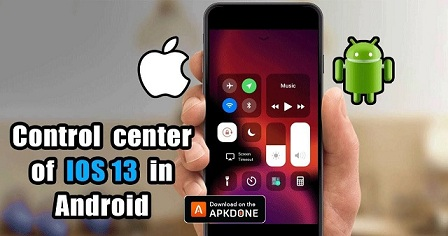

Мобильные приложения для подключенного предпринимателя
Всего несколькими касаниями
мобильного приложения предприниматели могут получить доступ к большому количеству информации и делать все, от управления финансами до отслеживания прогресса команды.
Жизнь предпринимателя непроста. Предприниматели всегда в пути — бегают от встречи к встрече — и постоянно манипулируют множеством различных аспектов своего бизнеса. К счастью, корпоративное программное обеспечение эволюционировало, чтобы кочующие предприниматели могли оставаться на связи, где бы они ни находились. Всего несколькими касаниями мобильного приложения предприниматели могут получить доступ к большому количеству информации и делать все, от управления финансами до отслеживания прогресса команды.
Здесь мы рассмотрим некоторые из наиболее полезных мобильных инструментов, которые могут помочь предпринимателям оставаться продуктивными, организованными и информированными.
Управление проектами — Wrike (iOS/Android)
Wrike — это инструмент управления проектами, который может помочь вам управлять множеством проектов. Это позволяет в режиме реального времени сотрудничать с вашей командой и предоставляет подробный обзор всех незавершенных элементов, чтобы помочь вам оставаться в курсе всех ваших различных проектов.
Вы можете назначать задачи конкретным участникам или командам и устанавливать жесткие сроки прямо из приложения. Wrike также позволяет отслеживать горячие проекты и получать обновления через простую панель инструментов, поэтому вы никогда не пропустите важные события, даже если вы не находитесь за компьютером.
Google Analytics предоставляет надежную информацию о производительности вашего веб-сайта, но может быть сложно извлечь и проанализировать необходимую информацию на смартфоне. С помощью Dashboard вы можете настроить различные инструменты в приложении, чтобы мгновенно извлекать информацию из Google Analytics в легко настраиваемый формат для вашего смартфона.
Все, что вам нужно сделать, это установить конкретные ключевые показатели эффективности для ряда факторов (например, ежедневных посетителей), и приложение автоматически предоставит обновленную оценку в режиме реального времени. Расширенные отчеты позволяют еще больше разбить ваши данные и проанализировать дополнительные точки данных, которые могут отслеживать показатели отказов, онлайн-продажи и другие ключевые показатели для более точного мониторинга эффективности вашего веб-сайта.
Ксеро (iOS/Android)
Xero — это облачное программное обеспечение для бухгалтерского учета и управления финансами, которое обеспечивает мгновенный доступ к вашим финансам. При желании вы можете сверять банковские счета, отправлять счета и анализировать свои прибыли и убытки на ходу. Эта цифровая книга будет управлять и отслеживать все ваши банковские счета, счета-фактуры, счета, требования о возмещении расходов и многое другое с вашего мобильного устройства.
Xero служит финансовым центром для всего вашего бизнеса. Существует более 500 приложений для самых разных бизнес-функций, от управления запасами до электронной коммерции, которые можно интегрировать с Xero.
Hootsuite (iOS/Android)

Hootsuite позволяет вам легко управлять всеми своими учетными записями в социальных сетях через одну единую платформу. Вы сможете взаимодействовать с людьми и видеть, что другие говорят о вашем бизнесе, через живую панель инструментов. Если кто-то опубликует вопрос или проблему или что-либо, что требует ответа, вы можете назначить его члену команды со своего телефона.
Hootsuite также будет отслеживать и уведомлять вас о релевантной социальной активности, чтобы вы могли создавать своевременный и интересный контент, который нравится вашей аудитории, и делиться им.
ПросперВоркс (iOS/Android)
ProsperWorks — это CRM с нулевым вводом данных, созданная специально для таких приложений Google, как Gmail, Календарь и Документы. С помощью мобильного приложения ProsperWorks вы можете отслеживать ход продаж, просматривать прогноз и историю продаж, вносить обновления и отправлять напоминания своей команде. Приложение также регистрирует звонки и электронные письма клиентов, поэтому ваши данные всегда актуальны, независимо от того, где происходило взаимодействие.
Лучше всего то, что мобильное приложение всегда синхронизируется — если потенциальный клиент свяжется с вами, пока вас нет, вы сможете легко получить доступ к важной информации, такой как прошлые взаимодействия, потенциальный размер сделки и ее ход.
Zoom.us (iOS/Android)
Zoom позволяет проводить высококачественные видеоконференции на любом устройстве. Приложение дает вам возможность участвовать во встречах в любой точке мира и делиться/представлять информацию прямо с вашего мобильного телефона. Даже если у участников собрания нет приложения Zoom, оно может подключать пользователей через другие популярные платформы для видеоконференций, такие как Skype. Zoom.us будет автоматически рассылать напоминания участникам встречи, чтобы даты и время не ускользали из их памяти.
Слэк (iOS/Android)
Slack — это платформа для обмена сообщениями, которая позволяет вам создавать несколько линий связи как с отдельными людьми, так и с командами. Это позволяет вам оставаться в тесном контакте с внутренними и внешними командами. В отличие от традиционных приложений для обмена сообщениями, Slack предлагает надежные функции, которые позволяют легко обмениваться документами, создавать публикации и оптимизировать общение, создавая более универсальный и прямой канал связи, чем электронная почта.